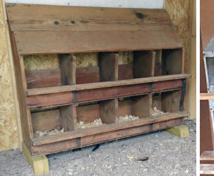
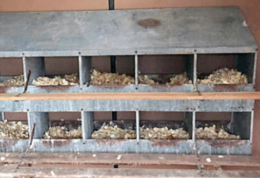

Laying nests: The laying nests should be big enough, easy to clean and disinfect, dark, cool and well-ventilated especially in hot areas. They also need to be placed in a convenient position. It is also important to consider that hens prefer to have privacy when they lay their eggs. Therefore, they like nests that are slightly dark inside. Nests should be provided with a perch for easy entrance. They are generally placed at a height of 10 – 15 cm from the floor to enable birds to jump into them easily. Nests should be comfortable and safe by providing litter material on the nest floor and they should be properly constructed. They must have a hip to prevent spillage of the litter material. They must also have a slopped roof to avoid birds roosting on the nest roof. There are individual and communal nests.
(a) The individual laying nests
The size of an individual nest should be 31 cm length × 35 cm width × 35 cm height. For every 4 hens, there should be 1 nest. Individual nests are usually built in groups of 5 nests wide and 2 or 3 rows high. These nests should have sloping roofs to prevent birds from sitting or sleeping on them. The bottom part of these nests should be movable for easy cleaning. Due to the hot weather in many areas of Tanzania, it is advisable to use wire mesh on the back side of the nests instead of solid material. Figure 10.7 (a) shows an example of individual nests.


(b) Communal nests
These are unpartitioned boxes of about 2.4 m long by 0.6 m wide with an opening at each end through which the birds enter and leave. Each has a sloping cover that is hinged so that it may be opened for gathering the eggs. The communal nest of 1.8 m length by 0.3 m width by 0.6 m height is enough for 50 hens (refer to Figure 10.8 (b).